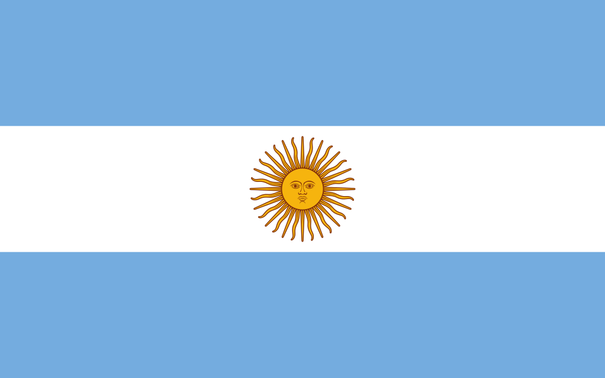

Fase de Grupos:
Cómo llegaba Argentina:
Argentina arribaba al mundial de Qatar como una de las favoritas a llevarse el título. Llevaba 36 partidos sin conocer la derrota, y cosechando títulos a nivel continental como la Copa América en 2021 venciendo a Brasil en el mítico Maracaná, o bien ganando la Finalíssima ganando y bailando a Italia disputada en el estadio de Wembley.
Grupo C:
A priori, Argentina tenía un grupo accesible:
- ✓ Arabia Saudita
- ✓ México
- ✓ Polonia


Arabia Saudita dió el batacazo...
Contra todo pronóstico, Arabia Saudita sorprendió a la celeste y blanca. Arrancó perdiendo y lo dió vuelta. Fue el comienzo menos pensado...


12
10' L. Messi (pen.) 48' S. Al-Shehri 53' S.Al Dawsari
Resumen del partido
Argentina se repone y gana al Tri:
Luego de la derrota, a la albiceleste le costó entrar en partido. Luego de un primer tiempo peleado, Lionel Messi se iluminó y destrabó el partido para la Scaloneta.
20
64' L. Messi 87' E. Fernandez
Resumen del partido
El pase a octavos frente a Polonia:
En su tercer partido, fue encontrando el juego en equipo. Messi erró un penal y parecía que se complicaba. Pero el fútbol de los jóvenes apareció y Argentina ganó cómodamente.
0 2
46' A. MacAllister 67' J. Alvarez
Resumen del partido
Grupo "C":
| EQUIPOS | PTS | PJ | PG | PE | PP | GF | GC | DIF |
|---|---|---|---|---|---|---|---|---|
| ARGENTINA | 6 | 3 | 2 | 0 | 1 | 5 | 2 | +3 |
| POLONIA | 4 | 3 | 1 | 1 | 1 | 2 | 2 | 0 |
| MEXICO | 4 | 3 | 1 | 1 | 1 | 2 | 3 | -1 |
| ARABIA SAUDITA | 3 | 3 | 1 | 0 | 2 | 3 | 5 | -2 |